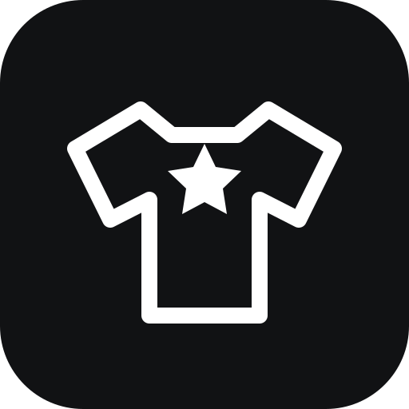

Mock up prints on clothing.
Explore apparel concepts from a blank garment and a graphic. Garment Lab can help with product mockup concepts, on-model editorial visuals, print-placement feedback, garment recommendations, and production considerations.
Important: Generated visuals are concepts, not exact reproductions, print-ready files, or manufacturing proofs. Text, colors, artwork details, and placement can vary.
Garment Lab is offered without a separate fee from its developer. Access to ChatGPT and its features remains subject to the applicable OpenAI plan and terms.